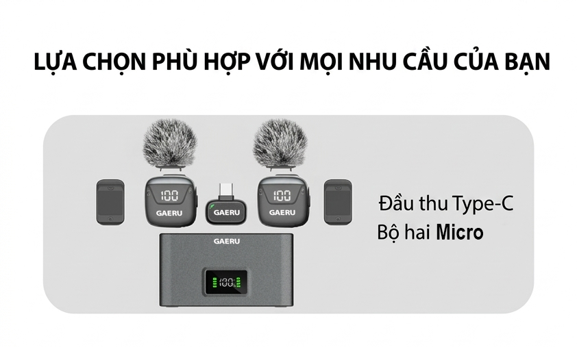
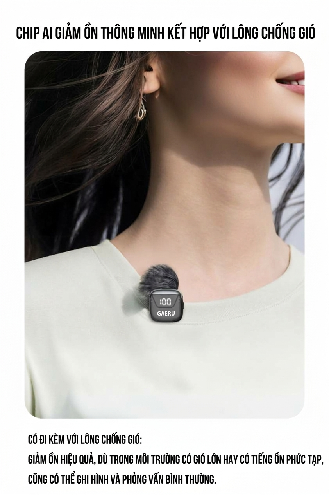
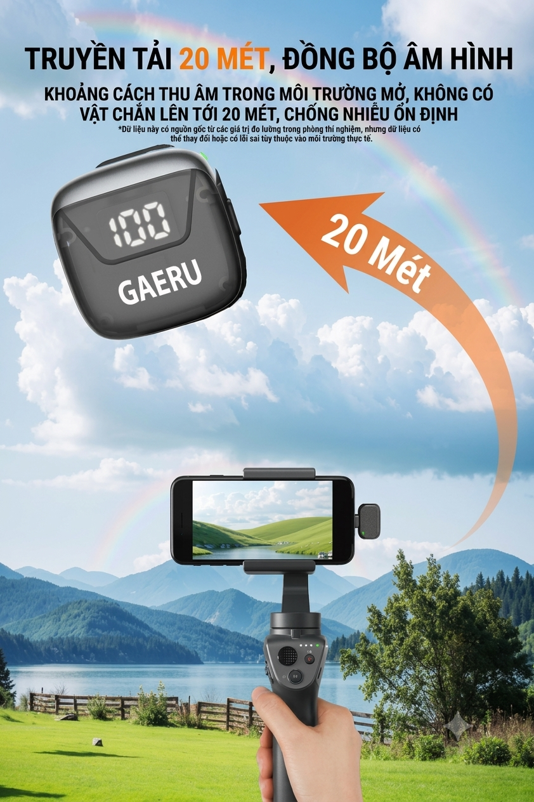
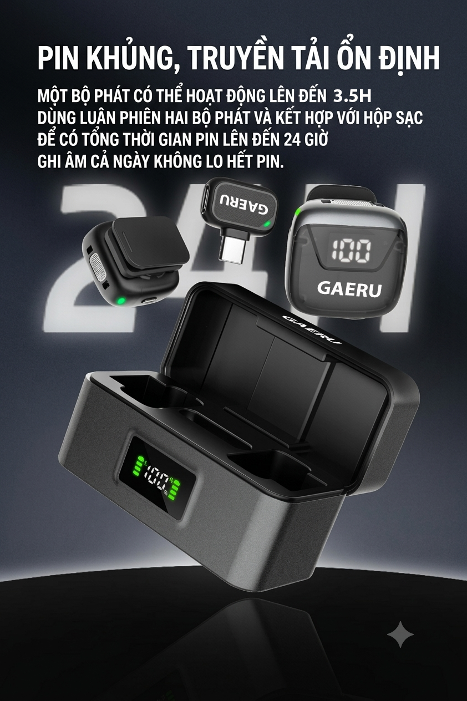

Hai người cùng kể chuyện
Một đầu thu hỗ trợ đồng thời hai bộ phát. Thu âm đa hướng 360° cho vlog, phỏng vấn và livestream.
GAERU M3 · MICRO KHÔNG DÂY CÓ HỘP SẠC
Từ vlog đầu tiên đến cuộc trò chuyện hai người. Hai micro nhỏ gọn cùng hộp sạc, sẵn sàng theo bạn mỗi ngày.
Chọn phiên bản
NHỎ GỌN ĐỂ BẮT ĐẦU
Một đầu thu hỗ trợ đồng thời hai bộ phát. Thu âm đa hướng 360° cho vlog, phỏng vấn và livestream.
Kết hợp bông lọc gió để hỗ trợ thu giọng nói ngoài trời. Hiệu quả phụ thuộc mức ồn, vị trí micro và môi trường thực tế.
Màn hình hiển thị phần trăm pin giúp bạn chủ động chuẩn bị trước mỗi buổi quay.
Cất giữ và sạc micro trong hộp. Chọn đúng phiên bản đầu thu hoặc bộ chuyển đổi cho thiết bị của bạn.
GAERU TRONG CUỘC SỐNG CỦA BẠN
Cài micro lên áo, thu thử và nghe lại trước khi ghi hình. Từ vlog cá nhân đến cuộc trò chuyện, giữ phần chuẩn bị thật đơn giản.
ÂM THANH THEO BẠN
Thu âm 24-bit / 48 kHz, kết hợp điều chỉnh độ lợi và giới hạn âm lượng tự động. Khoảng cách truyền lên đến 20 m trong không gian mở, không vật cản; kết quả thực tế tùy môi trường.


SẴN SÀNG CHO BUỔI QUAY TIẾP THEO
Một bộ phát hoạt động lên đến 3,5 giờ. Luân phiên hai bộ phát và kết hợp hộp sạc cho tổng thời lượng lên đến 24 giờ. Thời lượng thực tế thay đổi theo cách sử dụng.

CHI TIẾT THIẾT BỊ
| Hướng thu | Đa hướng 360° |
|---|---|
| Âm thanh | 24-bit / 48 kHz |
| Áp suất âm thanh tối đa | 120 dB |
| Tỷ lệ tín hiệu trên nhiễu | 100 dB |
| Pin bộ phát / hộp sạc | 70 mAh / 500 mAh |
GIẢI ĐÁP NHANH
Có. Đầu thu hỗ trợ đồng thời hai bộ phát. Thu thử từng micro trong ứng dụng bạn sử dụng trước khi bắt đầu.
Bộ cơ bản dùng đầu thu Type-C. Các lựa chọn chuyển đổi được hiển thị tại trang chọn phiên bản. Kiểm tra cổng kết nối, khả năng nhận micro ngoài của thiết bị và ứng dụng; chọn Chat ngay nếu cần đối chiếu.
Một bộ phát hoạt động lên đến 3,5 giờ. 24 giờ là tổng thời lượng khi luân phiên hai bộ phát và kết hợp hộp sạc, không phải một micro thu liên tục 24 giờ.
Trong môi trường mở, tầm nhìn thẳng và không có vật cản. Vật cản, nhiễu và điều kiện sử dụng có thể làm giảm khoảng cách thực tế.
CÂU CHUYỆN TIẾP THEO BẮT ĐẦU TỪ BẠN